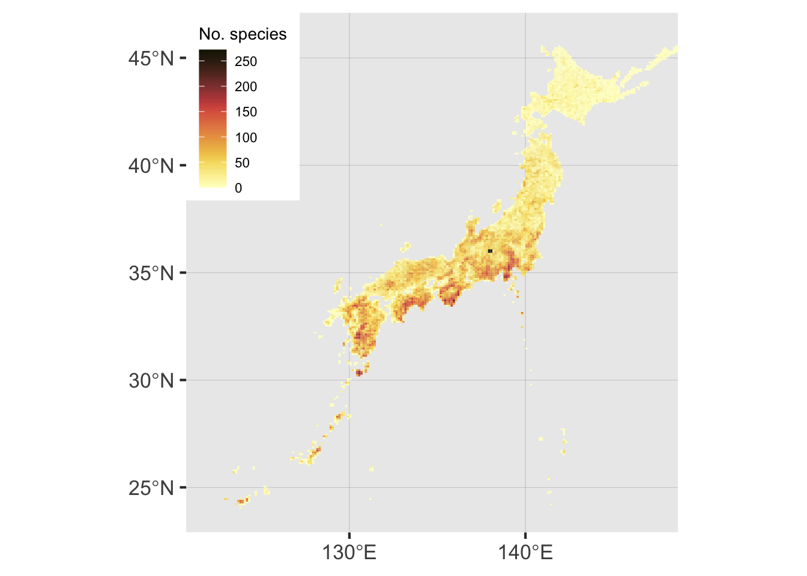
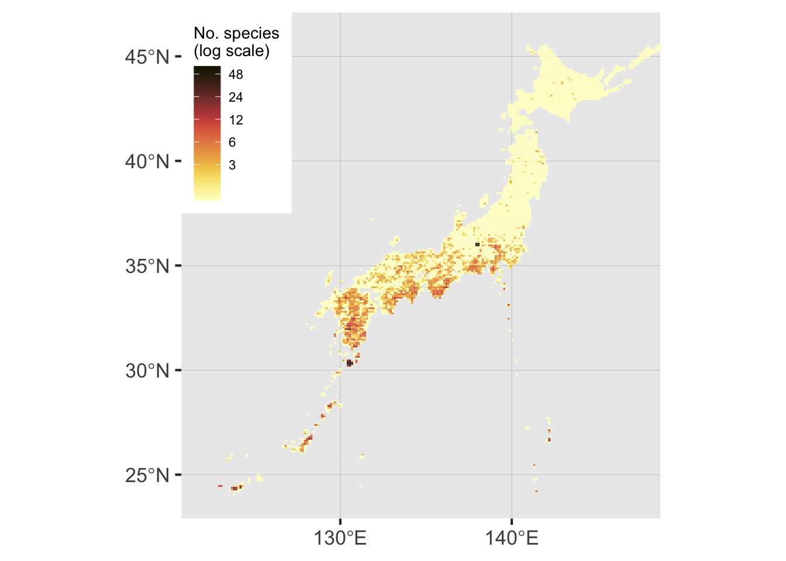

Resolving taxon names of Japanese ferns: A case study
Introduction
This analysis shows how the taxastand R package can be used to join datasets by resolving species names to a common, custom taxonomy.
The goal is to generate a heatmap of endangered fern species in Japan.
Methods
There are two data sources:
GBIF, which includes distribution data (occurrence records)
Green List, which includes conservation status for the ferns of Japan.
However, these data sources use different taxonomies, so names may not match between them. So, name harmonization is done by resolving names in each of the two sources to the pteridocat taxonomic database first, then merging.
Results
Name resolution
Of 727 scientific names in the Green List (hybrid formulas excluded), 717 names were successfully resolved.
Of 1012 scientific names in the GBIF data, 998 names were successfully resolved.
708 species were successfully mapped from GBIF data to Green List data via pteridocat, including 182782 occurrences (Table 1).
| match_group | n |
|---|---|
| Exact match | 411 |
| Difference in punctuation | 173 |
| Missing author | 32 |
| Taxonomic rule | 20 |
| Fuzzy | 13 |
Plots of species richness (Figure 1) and endangered species richness (Figure 2) appeared mostly similar to a previous study using data not obtained from GBIF (Nitta et al. 2022), supporting the reliability of this method. However, richness of endangered species (Figure 2) appeared slightly higher than in Nitta et al. (2022), which could be due to artifacts in GBIF data (false positives). Since Figure 2 is shown on a log-scale, even a very few number of false positives will clearly appear on the map.

